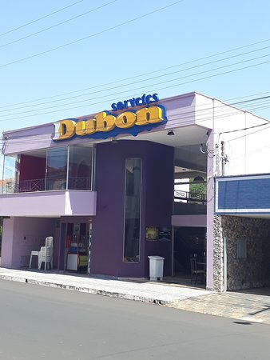
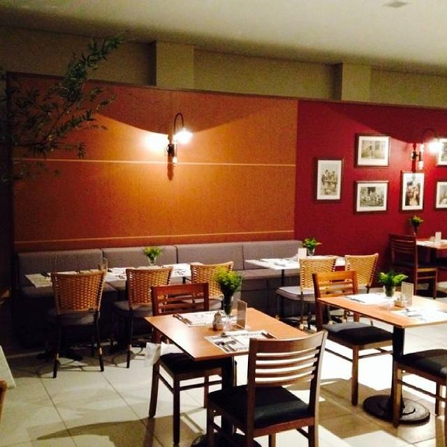
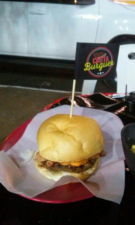

Sorveteria muito conhecida pelos seus preços justos.
Cozinha Italiana e Brasileira, com café da manhã, almoço e jantar, na faixa de preço de 10 a 50 Reais
Lanchonete que segundo os clientes trouxe uma nova cartela de lanches com ingredientes e combinações inusitadas ótimas!
